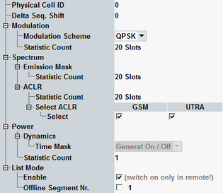

This section describes the following "Measurement Control" settings.

Adjust this parameter to the physical cell ID used by the measured signal. This setting is required to ensure that the R&S CMW can synchronize to the signal and perform channel estimation.
In the standalone (SA) scenario, this parameter is controlled by the measurement. In the combined signal path (CSP) scenario, it is controlled by the signaling application.
Delta sequence shift value (Δss) used to calculate the sequence shift pattern for the NPUSCH. Adjust this value to the measured signal to ensure that the R&S CMW can synchronize to the signal and perform channel estimation.
Remote command:Selects the used modulation scheme. Adjust this value to the measured signal.
The allowed values depend on the configured NPUSCH format and on the number of allocated subcarriers, see "Resource Unit Allocation".
Configure the resource allocation before configuring this setting.
In the standalone (SA) scenario, this parameter is controlled by the measurement. In the combined signal path (CSP) scenario, it is controlled by the signaling application.
Defines the number of measurement intervals per measurement cycle.
- Modulation:
Used by the views EVM, magnitude error, phase error, inband emissions, I/Q diagram and TX measurement.
One interval comprises one slot. - Emission mask:
Spectrum emission mask, one interval comprises one slot. - ACLR:
Spectrum ACLR, one interval comprises one slot. - Power:
Power dynamics, one interval comprises one complete diagram.
Power monitor, one interval comprises the number of slots specified via parameter "No. of Measure Slots".
The measurement provides independent statistic counts for different results. In single-shot mode, a measurement with a completed statistic count is stopped, even if another measurement with an incomplete statistic count is still running.
Remote command:Specifies which adjacent channels are evaluated: GSM channels and/or UTRA channels.
Remote command:Displays the type of time mask used for power dynamics measurements.
The general on/off time mask is defined in 3GPP TS 36.521, section 6.3.4F.
See also "Power Dynamics Limits".
The list mode can only be enabled via remote control command. When the list mode has been enabled, the checkbox allows you to disable the list mode.
You can disable the list mode also by changing the measurement mode, see "Measurement Mode".
Remote command:Selects the list mode segment to be displayed in the measurement diagram. To select a segment number, the list mode must be enabled.
Option R&S CMW-KM012 is required.
Remote command: